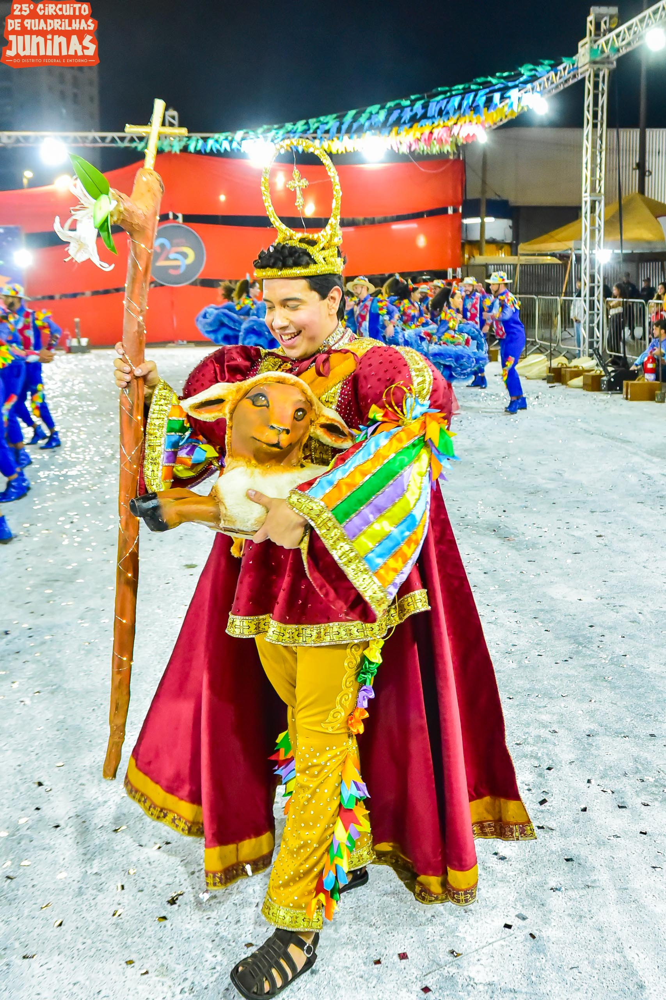
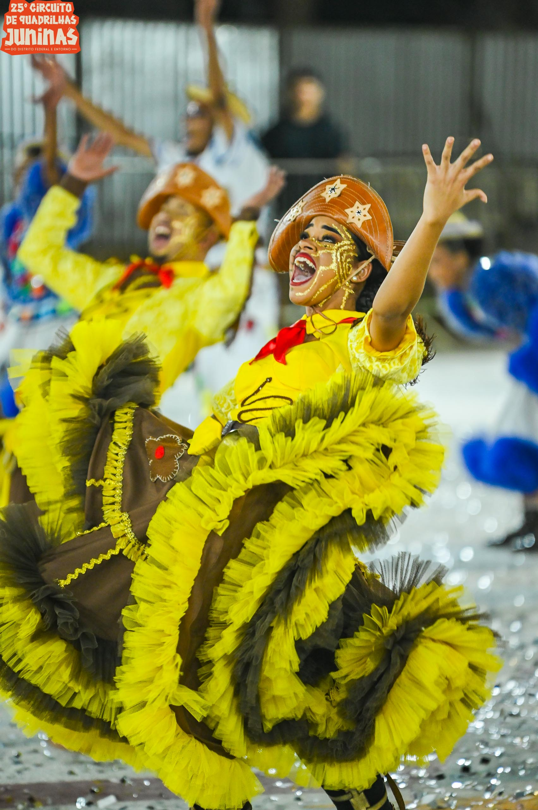
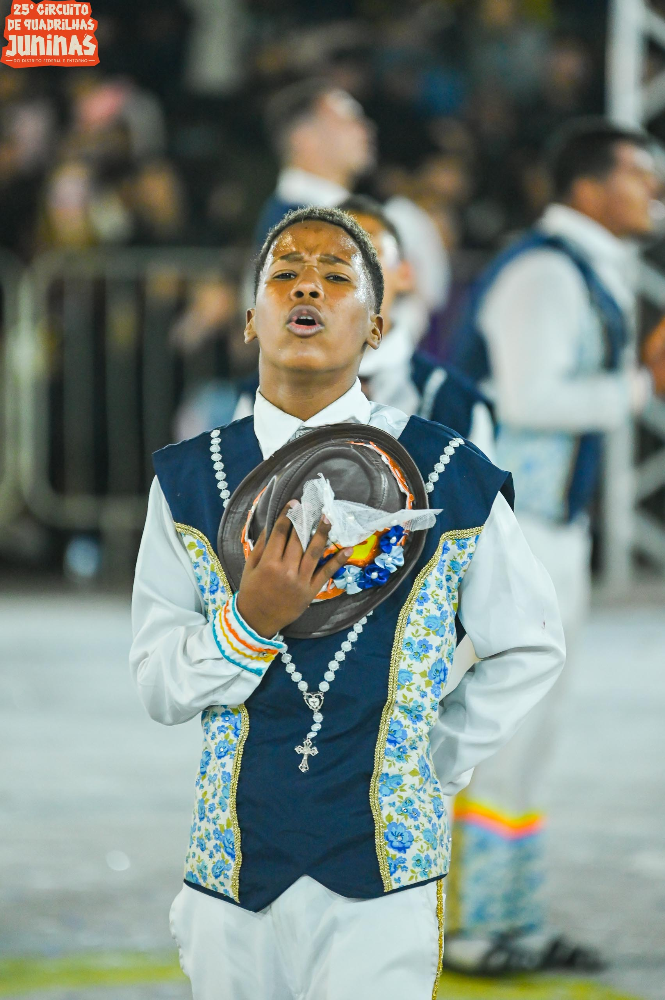
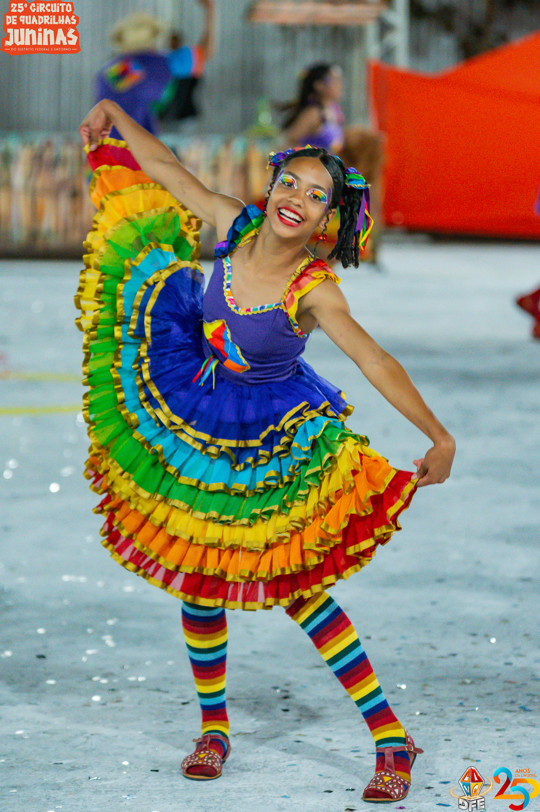
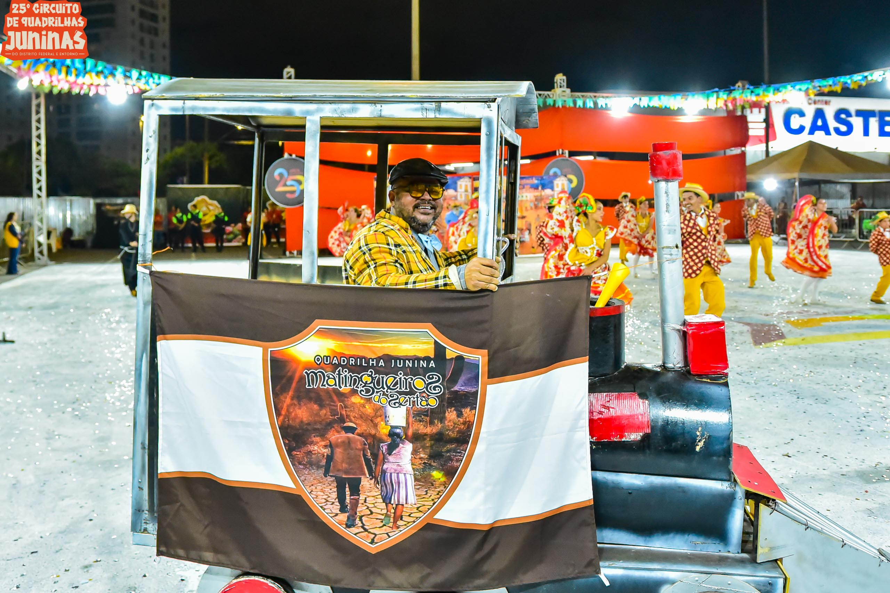
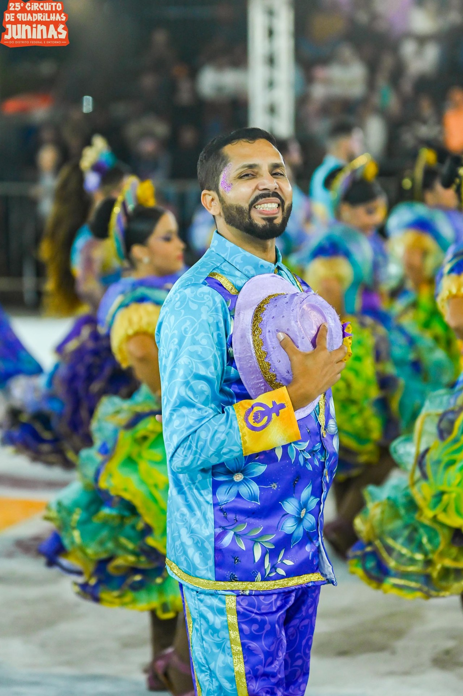

Circuito
Temporada 2024
Em breve mais informações sobre esta temporada.
Grupo Especial
Classificação final

Grupo de Acesso
Classificação final
| # | Quadrilha | Nota |
|---|---|---|
| 1 |  Vai Mas Não VaiLuziânia/GO | 1185.2 |
| 2 |  Tico Tico no FubáÁguas Lindas de Goiás/GO | 1178.0 |
| 3 |  Espalha BrasaParanoá/DF | 1173.1 |
| 4 |  Os Caboclos do SertãoPlanaltina/GO | 1172.8 |
| 5 |  Matingueiros do SertãoSamambaia/DF | 1166.9 |
| 6 |  Chinelo de CouroSão Sebastião/DF | 885.3 |
| 7 | Bamboleá | 865.0 |